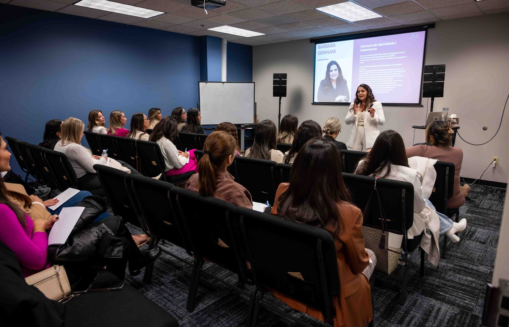

Comunicação de autoridade
Transmitir credibilidade, clareza e segurança em situações profissionais diferentes.
Domine técnicas de oratória, supere bloqueios emocionais e desenvolva uma comunicação capaz de transmitir autoridade, fortalecer o seu posicionamento e ampliar as suas oportunidades profissionais.
Vagas limitadas: a formação é prática e cada pessoa apresenta.

Não basta ter conhecimento. É preciso saber comunicá-lo.Oratória de Autoridade
Uma formação para transformar a maneira como você se comunica, trabalhando ao mesmo tempo o que se faz e o que trava.
Não adianta dominar técnicas de comunicação se o medo e a insegurança impedem você de usá-las.Bárbara Germani
Transmitir credibilidade, clareza e segurança em situações profissionais diferentes.
Respiração, ritmo, pausas, entonação e projeção vocal, na prática.
Postura, gestos, contato visual e expressão corporal reforçando o que você diz.
Estruturar apresentações envolventes e comunicar com impacto em vendas e liderança.
Identificar os padrões emocionais que viram medo, insegurança e travamento na hora de se expor.
Exercícios, apresentações, construção de um pitch de 60 segundos e devolutiva para evoluir.
Em reunião, negociação, apresentação, vídeo, venda ou no palco, a sua comunicação é uma competência estratégica.
Palestrante e especialista em comunicação, liderança e padrões emocionais.
Sou formada em Artes Cênicas pela UFSM, e foi ali que eu aprendi a primeira coisa que sustenta tudo o que eu faço hoje: a diferença entre o personagem que a pessoa apresenta e a pessoa que está atrás dele.
Passei dez anos dentro de laboratórios farmacêuticos multinacionais, liderando formação de equipes, treinamentos e eventos científicos. Foi lá que eu vi de perto o que este treinamento resolve: competência técnica não garante que a pessoa seja ouvida.
Entre 2023 e 2025 estive no Método CIS, em Orlando, três anos dentro do universo Febracis, acompanhando de perto um dos trabalhos de desenvolvimento humano mais conhecidos do Brasil. Boa parte do meu repertório sobre identidade e comportamento se formou ali.
Hoje conduzo treinamentos entre o Brasil e os Estados Unidos, já estive em mais de quinze cidades norte-americanas, e sou autora de A Origem dos Seus Resultados.
Bárbara Germani
Valor regular US$ 699
US$599
Com o cupom promocional · desconto de US$ 100
Dúvida antes de decidir? Fale comigo no WhatsApp.
Sua autoridade não depende apenas do que você sabe. Depende também de como você comunica o que sabe.Oratória de Autoridade
Não. A formação atende tanto quem quer superar dificuldades de comunicação quanto quem já se apresenta e quer aperfeiçoar a performance. O ponto de partida é diferente para cada pessoa, e o trabalho é prático o suficiente para acompanhar os dois.
Sim. São exercícios, técnicas, apresentações e atividades de performance. Você fala, é observado e recebe devolutiva no mesmo dia. Não é um dia de assistir.
Não. Comunicação é ferramenta de quem lidera, vende, negocia, grava vídeo, apresenta projeto ou quer fortalecer o próprio posicionamento. O palco é só uma das situações.
Sim, e esse é o segundo pilar da formação. Além da técnica, a gente trabalha os padrões emocionais que geram insegurança, vergonha e travamento. De nada adianta saber a técnica se o medo impede você de usá-la.
O endereço completo é enviado por e-mail e WhatsApp na confirmação da inscrição, junto com as orientações de chegada.
Não deixe que a insegurança, o medo de julgamento ou a falta de técnica continuem limitando a sua capacidade de se posicionar, influenciar e apresentar as suas ideias.